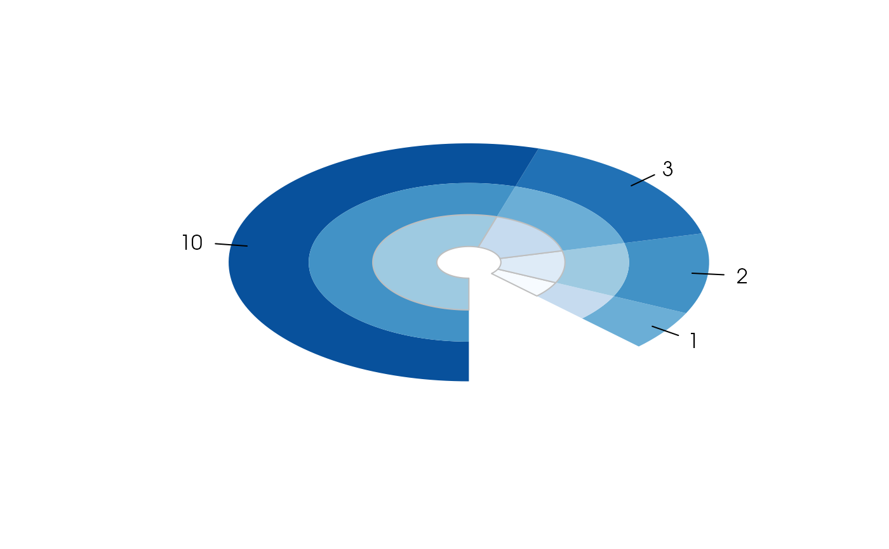

While similar to graphics::pie(), this function is much more
flexible as it allows providing different parameters for each slice of the pie.
Furthermore, it allows adding the plot to the current device, making it possible
to create compound piecharts.
piechart( x, labels = names(x), radius = 1, doughnut = 0, origin = c(0, 0), edges = 200, slice.off = 0, init.angle = 0, last.angle = 360, tick.len = 0.1, text.args = list(), segments.args = list(), skip.plot.slices = FALSE, add = FALSE, rescale = TRUE, ... )
| x | Numeric vector. Values that specify the area of the slices. |
|---|---|
| labels | Character vector of length |
| radius | Numeric vector. Radious of each slice (can be a scalar). |
| doughnut | Numeric scalar. Radious of each inner circle (doughnut) (can be a scalar). |
| origin | Numeric vector of length 2. Coordinates of the origin. |
| edges | Numeric scalar. Smoothness of the slices curve (can be a vector). |
| slice.off | Numeric vector. When |
| init.angle | Numeric scalar. Angle from where to start drawing in degrees. |
| last.angle | Numeric scalar. Angle where to finish drawing in degrees. |
| tick.len | Numeric scalar. Size of the tick marks as proportion of the radius. |
| text.args | List. Further arguments passed to |
| segments.args | List. Further arguments passed to |
| skip.plot.slices | Logical scalar. When |
| add | Logical scalar. When |
| rescale | Logical scalar. When |
| ... | Further arguments passed to |
A list with the following elements:
A list of length length(x) with the coordinates of each
slice.
A numeric matrix of size length(x)*2 with
coordinates where the labels can be put at.
A numeric vector of size length(x) with the starting
degree in radians of the slice.
A numeric vector of size length(x) with the ending
degree in radians of the slice.
The function is a wrapper of graphics::polygon(),
so all parameters such as color, density, border, etc. are passed directly
by mapply() so that are specified one per slice. The coordinates
of the slices are computed internally.
https://commons.wikimedia.org/wiki/File:Nightingale-mortality.jpg
# Example 1 ----------------------------------------------------------------- # A set of 3 nested rings rings starting at 315 deg. and ending at 270 deg. # Values to plot vals <- c(1,2,3,10) # Outer (includes labels) piechart(vals, col=grDevices::blues9[5:8], border=NA, doughnut = .5, radius=.75, labels=vals, init.angle = 315, last.angle = 270)# Middle piechart(vals, col=grDevices::blues9[3:6], border=NA, doughnut = .3, radius=.5, add=TRUE, init.angle = 315, last.angle = 270)# Inner piechart(vals, col=grDevices::blues9[1:4], border="gray", doughnut = .1, radius=.3, add=TRUE, init.angle = 315, last.angle = 270)# Example 2 ----------------------------------------------------------------- # Passing values to polygon and playing with the radius and slice.off piechart(1:10, density=(1:10)^2/2, slice.off = (1:10)/30, doughnut = .5, radius = sqrt(10:1), # Here we are setting random labels... labels=sapply(1:10, function(x) paste(sample(letters, x, TRUE), collapse="")) )